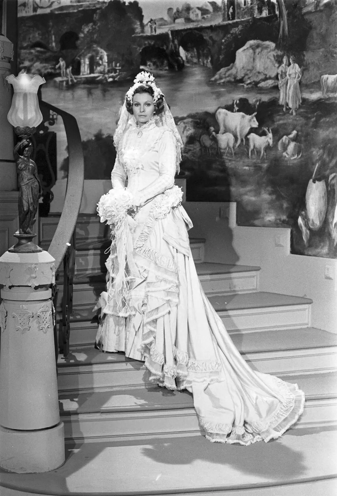
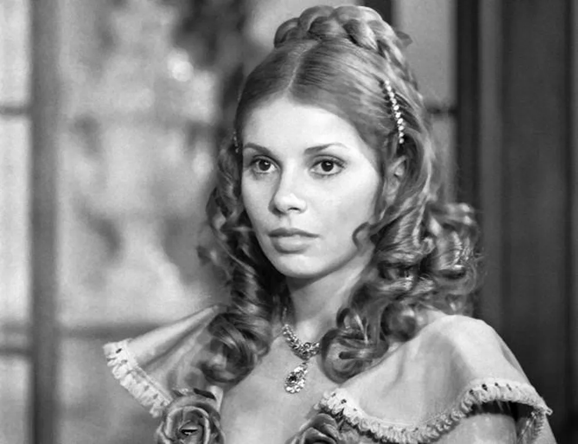

Senhora
José de Alencar
"Senhora" de José de Alencar é um eletrizante romance do século XIX onde Aurélia Camargo, após herdar uma fortuna, decide se vingar de seu ex-noivo, Fernando Seixas, casando-se com ele. Entre jogos de poder e emoções à flor da pele, a trama revela como o amor verdadeiro pode emergir das cinzas da manipulação e do orgulho. Uma história intrigante sobre redenção e a busca pela autenticidade em uma sociedade opressora!
Personagens

AURÉLIA CAMARGO
Aurélia é a protagonista de "A Senhora" e uma das personagens femininas mais complexas criadas por José de Alencar. Ela é apresentada como uma jovem de grande beleza, inteligência e personalidade forte. Sua trajetória de vida é marcada por desafios e mudanças radicais.
FERNANDO SEIXAS
Fernando é o protagonista masculino da obra, inicialmente retratado como um jovem ambicioso que prioriza a ascensão social e financeira. Sua trajetória é marcada por uma evolução moral e emocional significativa ao longo do romance.

ADELAIDE AMARAL
É uma personagem secundária na obra. Ela é uma amiga e confiante de Aurélia. Sua presença na história ajuda a ilustrar o círculo social e as relações de protagonista, bem como suas interações com outras figuras femininas na trama.

EMÍLIA CAMARGO
Dona Emília é a mãe de Aurélia, que faleceu antes do início dos eventos narrados no livro. Embora não apareça diretamente na história, sua presença é sentida através das lembranças e da influência que exerce sobre Aurélia.
LEMOS
Lemos é o tutor jurídico de Aurélia Camargo após a morte de sua mãe, Dona Emília. Ele é responsável por cuidar dos bens e interesses de Aurélia até que ela alcance a maioria e possa administrar sua fortuna sozinha.
Enredo
A trama de "Senhora" explora as dinâmicas sociais e econômicas da elite do Rio de Janeiro no século XIX. A história começa com Aurélia Camargo, uma jovem que perde o noivo, Fernando Seixas, por causa de sua situação financeira. Após receber uma grande herança de seu avô materno, Aurélia decide se vingar de Fernando, comprando-o de volta para se casar com ela. O casamento inicialmente é um jogo de poder e manipulação, mas aos poucos, os sentimentos de ambos são revelados, e o amor verdadeiro começa a emergir. O romance termina com a reconciliação do casal, após ambos reconhecerem seus erros e o valor do amor sincero.
Narrador
A obra é narrada em terceira pessoa por um narrador onisciente, que tem conhecimento total dos pensamentos, sentimentos e motivações dos personagens. Essa escolha narrativa permite uma análise profunda dos dilemas emocionais e sociais enfrentados por Aurélia e Fernando.
Tempo
O romance se passa no século XIX, refletindo o contexto histórico e social do Brasil imperial. A obra aborda questões como o casamento por interesse, o status social, e as convenções sociais da época, destacando o papel das mulheres na sociedade.
Espaço
A história se desenrola principalmente no Rio de Janeiro, que era a capital do Brasil na época. A cidade é retratada com detalhes que destacam tanto a opulência dos salões da elite quanto as ruas e bairros mais simples, mostrando o contraste social e as realidades da vida urbana do período.
Integrantes
Site desenvolvido apenas para fins institucionais, sem fins lucrativos.
Direitos de imagem restritos e reservados a © Copyright 2000-2024 Globo Comunicação e Participações S.A.